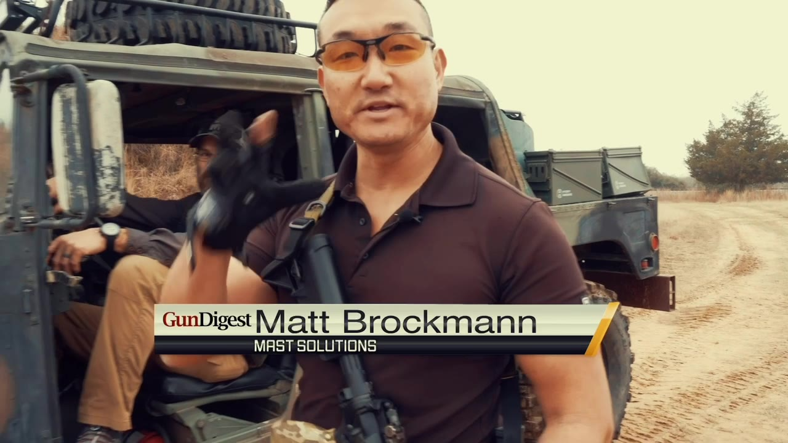

Chapter 01 · 34 Years · Quiet · Deliberate · Details Matter.

images/mast/hero-casualty-carry.jpg
Chapters in page order. Each item has a number like 4.03 (chapter 4, item 3); media strip items are M.01 onward. Reply with moves and swaps against these numbers. The course list is loaded live from the booking Worker and is not shown here.

Military. · Law Enforcement. · Civilian.


Firearms. · Hand Combat. · Knife Combat. · CQB. · Fitness. · Medical. · Leadership.


